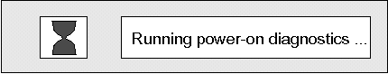
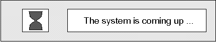
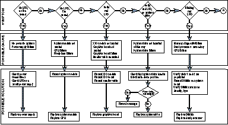
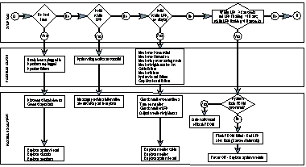
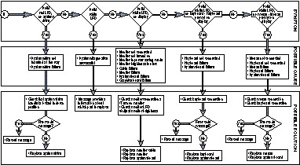
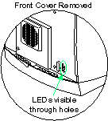
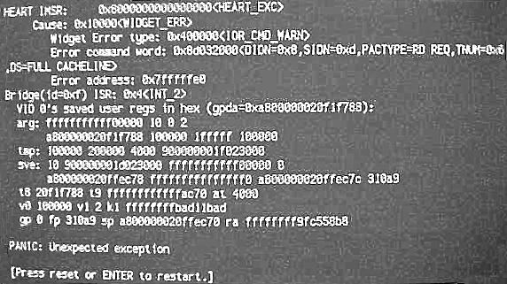

Operating Documentation
Direction 5114043-800, Rev# 9
LightSpeed 3.X Service Methods (Advanced)
Operating Documentation |
The computer follows a sequential power-up process. After power to the computer is applied, the lightbar on the front of the computer turns Red. While the motherboard is running its power-up self-test, the bar remains RED.
When the bar first lights, during power-on, the monitor displays running power-on diagnostics on screen.
Illustration 1: Power-on Diagnostics Notifier

After all of the power-on tests have passed, the light bar turns white, and the Starting Up the System pop-up window appears. This is when you can access SGI diagnostics and its host command line. Press the <ESC> key or click on the [STOP FOR MAINTENANCE] box if you want to access the firmware based tools.
Illustration 2: Starting up the system notifier

If you don't interrupt, after a few seconds the “System Is Coming Up” pop-up will appear.
Illustration 3: The System is coming up notifier

The light bar LEDs on the front of the Octane computer provide useful diagnostic information. If a problem occurs during computer initialization, the Octane computer will report it using these LEDs.
In this section, failure symptoms are described, as well as their possible causes and remedies.
| NOTE: | For a scalable, full size version of the following flow chart (all three panels), click on the PDF icon below. |
Media File 1: Full Size Illustration: Interpreting the Light Bar LEDs

Illustration 4: Interpreting the Light Bar LEDs (part 1 of 3)

Illustration 5: Interpreting the Light Bar LEDs (part 2 of 3)

Illustration 6: Interpreting the Light Bar LEDs (part 3 of 3)

Located immediately behind the lower right front cover are seven (7) green LEDs. These LEDs are visible with the front cover removed by looking through the holes located in the lower front right of the chassis (see Illustration 7). The LEDs you will see are attached to the back of the front plane circuit board, as viewed through the holes in the lower right area of the chassis next to the DB15 connector. There are 2 columns: 1 column consisting of 4 LEDs and another with 3 LEDs. They are depicted in Table 1 and Table 2 that way.
Illustration 7: CPOP Connector LEDs

Table 1: CPOP Connector LEDs - Generic Application
| DESCRIPTION | COLUMN 1 | COLUMN 2 | DESCRIPTION |
|---|---|---|---|
| Base IO | OFF | ||
| Quad A | OFF | OFF | PCI |
| Quad C | OFF | OFF | Quad B |
| Quad D | OFF | OFF | Heart |
Table 2: CPOP Connector LEDs - CT Product Specific Application
| DESCRIPTION | COLUMN 1 | COLUMN 2 | DESCRIPTION |
|---|---|---|---|
| System Module | ON | ||
| Quad A (SI w/ TM) | ON | ON | PCI Chassis |
| Quad C (None in this scanner) | OFF | OFF | Quad B (None in this scanner) |
| Quad D (SI) | ON | ON | Heart ASIC |
The purpose of these LEDs is NOT “diagnostic” in nature - these LEDs simply indicate whether the XIO modules are properly seated and have been detected by hardware. In the case of the Heart ASIC, the LED is a “status OK” indicator.
Brief descriptions of these 7 green LEDs follow:
| Base IO | Main System Module is seated/detected OK |
| Quad A | Top left XIO quad module is seated/detected OK |
| Quad C | Lower right XIO quad module is seated/detected OK |
| Quad D | Lower left XIO quad module is seated/detected OK |
| PCI | PCI chassis/ASIC seated/detected OK |
| Quad B | Top right XIO quad module seated/detected OK |
| Heart | Heart memory control ASIC on System Module status OK |
Panics are un-recoverable errors caused by a computer hardware failures. The symptom includes a Panic error message, computer hangs, and the need to re-boot.
The key to troubleshooting PANIC errors is understanding the error message. In most cases, the message will state the symptom. Such as WIDGET_ERR, as shown in Illustration 8 for example. WIDGET_ERR is not the cause but the symptom. To localize, look for a hardware device that is reporting the error.
Illustration 8: Example Panic Error Message

In Illustration 8, the error screen indicates an unexpected interrupt being reported by the Heart. The “Heart” is an ASIC on the Octane IP30 motherboard. Therefore the IP30 is experiencing problems. Another SGI hardware acronym that can show up is Xbow. Xbow stands for crossbow. It’s the XIO ASIC on the Octane frontplane. It interconnects the IP30, XIO graphics, and the PCI module. These are the two most commonly encountered hardware acronyms.